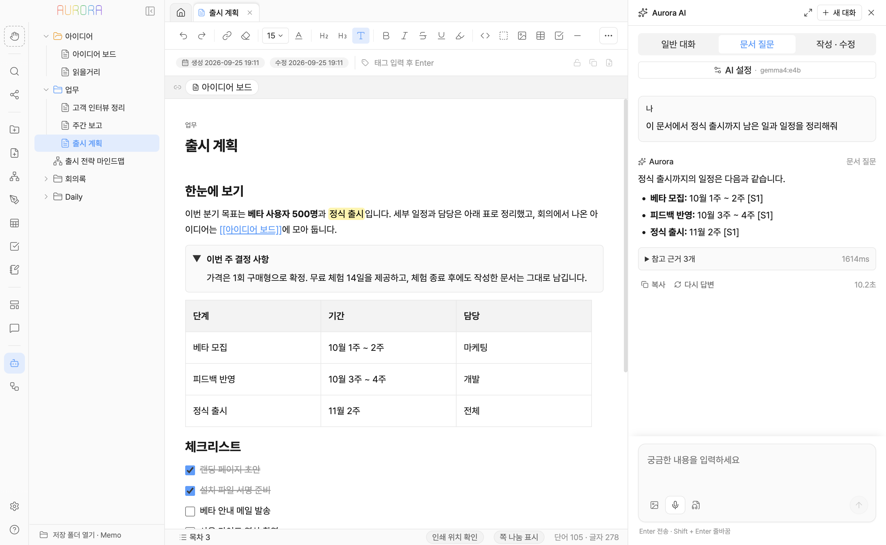

학생이라면
- 강의 녹음을 받아 적고 AI로 핵심만 요약
- 교재 PDF를 편집할 수 있는 노트로 변환
- 과목별 성적 · 과제를 시트로 계산
- 시험 범위를 마인드맵으로 한눈에
- 리포트는 서식 그대로 Word · PDF로 제출
문서, 엑셀, PDF, 마인드맵, 회의록, Todo, AI, 자동화까지.
여기저기 흩어져 있던 도구를 Aurora 하나에 전부 담았습니다.
Windows 10 · 11 (64비트) · macOS (Apple Silicon) · 계정 가입 없이 바로 시작

학생이라면
직장인이라면
여러 앱에서 가능하던 쓰기, 정리하기, 계산하기, 생산하기가 하나의 앱에서 끝납니다.
AI 비서
문서가 밖으로 나가지 않아 회사 자료도 안심입니다.
마인드맵
머릿속이 복잡할 때, 글보다 먼저 생각의 모양을 잡으세요. 정리된 맵은 그대로 문서가 됩니다.
엑셀 같은 시트
표 하나 만들자고 엑셀을 따로 켤 필요가 없습니다.
자동화 플로우
매일 반복하던 정리를 한 번만 설정하세요. 다음부터는 Aurora가 알아서 해 둡니다.
음성 받아쓰기
기록은 AI가 맡습니다.
PDF · 이미지 → 문서
다시 타이핑하던 교재와 스캔 자료를, 바로 고쳐 쓸 수 있는 노트로 바꿔 드립니다.
보고서도 과제도 여기서 끝. 화면에서 본 그대로 인쇄되니, 제출 직전에 서식이 깨질 걱정이 없습니다.
보낼 때는 누구나 여는 Word와 PDF로. 받는 사람에게 Aurora가 없어도 됩니다.
매주 같은 양식을 처음부터 만들지 마세요. 한 번 만든 틀이 매번 시간을 벌어 줍니다.
말로 설명하기 어려운 구조는 그려서 보여 주세요. 그림도 메모와 같은 곳에 남습니다.
쌓이기만 하던 메모가 서로 이어져, 잊고 있던 아이디어를 다시 만나게 해 줍니다.
할 일 앱을 따로 둘 이유가 없습니다. 오늘 할 일과 오늘의 기록이 한 페이지에 모입니다.
누가, 언제, 어디서가 정리된 회의록이 몇 분이면 완성됩니다. 다음 회의 때 다시 찾기도 쉽습니다.
일기, 계정 정보, 민감한 자료까지 한 앱에 둬도 괜찮습니다. 열쇠는 나만 갖습니다.
USB도 메신저도 필요 없습니다. 같은 네트워크의 옆자리 PC로 문서를 바로 건넵니다.
컴퓨터를 바꿔도, 실수로 지워도 괜찮습니다. 모든 것이 파일 하나로 돌아옵니다.
가입도, 업로드도, 인터넷도 필요 없습니다. 모든 기록과 AI가 내 컴퓨터 안에서만 움직입니다.
무료 로컬 AI 실행기인 Ollama 를 설치하고 모델을 하나 받으면 됩니다. 앱 안의 안내를 따라 몇 번만 누르면 됩니다. AI 없이도 문서 · 시트 · 마인드맵 · 드로잉 · 회의록은 모두 쓸 수 있습니다.
설치하고 저장할 폴더를 한 번 고르면 끝입니다. 모든 기능은 앱 안의 사용 가이드에 그림과 함께 정리되어 있고, 검색으로 바로 찾을 수 있습니다.
마크다운(.md) 메모가 든 폴더는 그대로 열리고, 엑셀 파일은 시트로 가져올 수 있습니다. 반대로 Word · PDF · 엑셀로 언제든 내보낼 수도 있습니다.
문서는 내 컴퓨터의 폴더에만 있고, Aurora 는 계정 · 동기화 · 사용 기록 수집이 없습니다. 민감한 문서는 비밀번호로 잠가 AI 참고 대상에서도 뺄 수 있습니다.
지금 받아서 첫 메모를 써 보세요.
버전 7.2.1 · Windows 10 · 11 (64비트) · macOS (Apple Silicon)